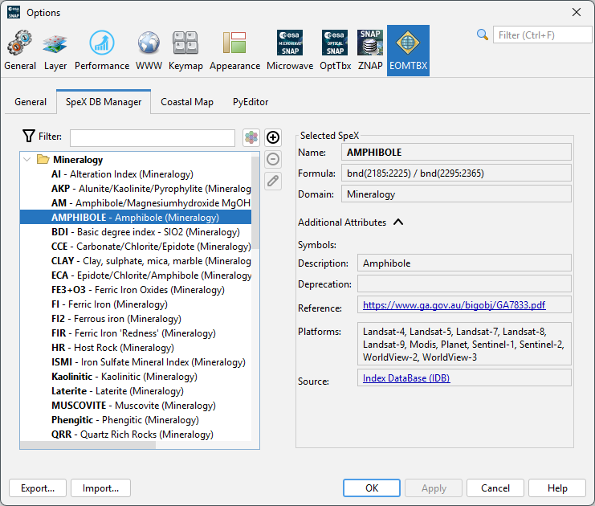
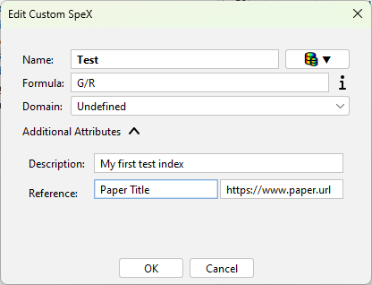

|
|
EOMasters Toolbox | |
The database used by the SpeX Processor can be managed in the options. The
options are accessible by the standard way in the menu Tools / Options and then you need to select the
category EOMTBX and the tab SpeX DB Manager. Alternative you can access it directly via the
menu Optical / Spex / Manage SpeX Database.

On the left side all available spectral indices are listed in a tree view, on the right side the details of the currently selected index are shown. In the middle three buttons allow to add, remove and edit user defined indices.
The tree view can be filtered by entering text into the filter field at the top. The list of indices will be reduced to those indices which contain the text in the name, the description, the domain, the formula or the platforms. Capitalisation is ignored for the filtering. Beside the filter field you can toggle how the indices are grouped.
| Grouping | Icon | Description |
|---|---|---|
| Domain | The indices are grouped by their domain (Default). | |
| Name |  |
The indices are grouped alphabetically by the first letter of their name. |
| Source |  |
The indices are grouped by their source where they have been taken from. |
| None |  |
The indices are not grouped at all. Only sorted by name. |
For each spectral index the following information is available and displayed on the right side when selected Some are only displayed when the additional attributes panel is expanded (clicked):
Burn, Radar, Snow, Soil,
Undefined, Urban, Vegetation, WaterBeside the predefined indices it is possible to add your own user indices. The three buttons in the middle are used to maintain your user defined indices.
| Button | Description |
|---|---|
| This button allows to add a new spectral index to the database. | |
 |
This button removes a spectral index. It is only enabled if a user defined index is selected and disabled if a predefined index is selected. |
 |
This button allows to edit a spectral index. It is only enabled if a user defined index is selected and disabled if a predefined index is selected. |
When adding or editing a user defined spectral index the following dialog is shown:

You can edit the 5 attributes Name, Formula, Domain, Description and the Reference. The Source attribute will be set automatically.The formula must be compatible with the Band Maths of SNAP after the symbols have been replaced with the respective value.
You can use the  button next to the name field to select an existing
spectral index and prefill all fields.
button next to the name field to select an existing
spectral index and prefill all fields.

In order to write the formula you can hover over the  next to the Formula
field. It will show a panel with the usable symbols.
next to the Formula
field. It will show a panel with the usable symbols.

The available symbols are also listed on the SpeX Formula Symbols page.